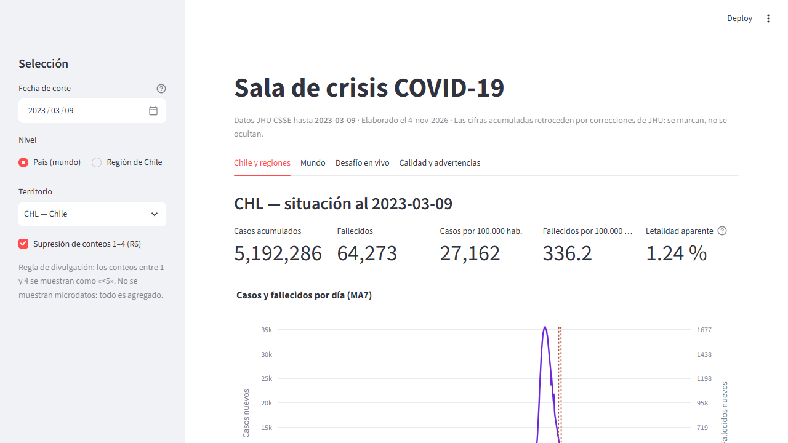
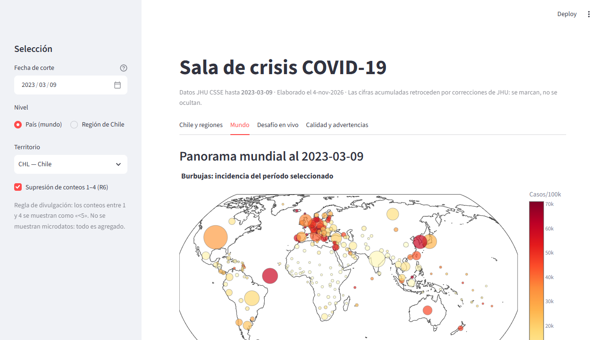
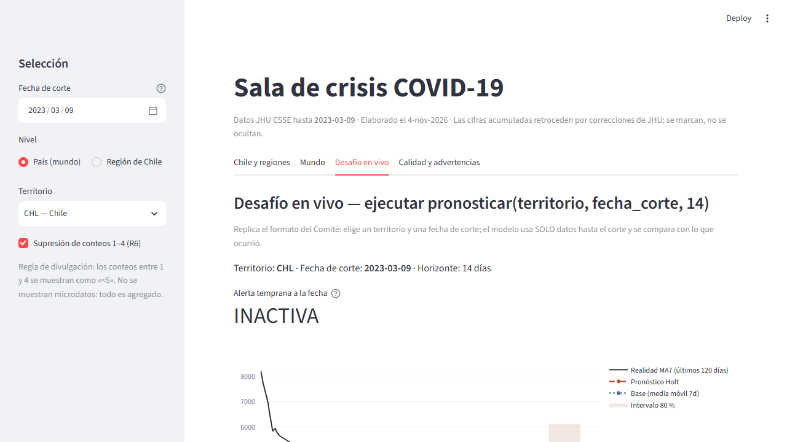

Construimos una plataforma reproducible con los tres años completos del registro histórico de Johns Hopkins (22-ene-2020 → 9-mar-2023): 1.143 reportes diarios, 4.287.473 filas, unificadas en una capa limpia Parquet (109 MB, 18,6 % del CSV, lectura 8,2× más rápida) y un modelo en estrella en DuckDB (4.287.374 hechos, grano territorio-día). La cadena completa se instala y se regenera con comandos documentados en el README.
Hallazgos principales:
Recomendaciones (sección 17): (1) plataforma única auditada desde el día 1 con reglas de calidad ejecutadas en cada carga; (2) alerta temprana operativa con evaluación histórica obligatoria; (3) tablero público con calidad visible y supresión 1–4.
El Comité Asesor encargó: (i) construir una plataforma de datos confiable con el registro histórico; (ii) responder con evidencia qué pasó en Chile y el mundo y qué datos habrían permitido anticiparlo; (iii) entregar un tablero usable en vivo y tres recomendaciones. Trabajamos sobre el enunciado completo: R1–R8, preguntas P1–P7 y las restricciones de entrega (repositorio reproducible, ZIP, informes, tablero).
Decisiones de alcance y método: se usó JHU CSSE como fuente canónica y OWID (vacunación) como fuente externa por cruce ISO3 (la fuente externa propuesta en el roadmap, adoptada). Se declaró el grano territorio canónico × día. Las correcciones y artefactos de JHU se marcan, no se corrigen (corregir sería inventar). Toda la documentación distingue cifras «publicadas» de «limpias para cálculo».
python src/descargar_reportes.pypython src/ingesta.pyreport_date desde el archivo · etapa_esquema · clave_raw (linaje) · nulos conservadospython src/territorios.py (identidad) → python src/construir_dw.py (DuckDB estrella) → python src/calidad.py (reglas)Frente a SQLite: DuckDB consulta Parquet directamente, tiene agregaciones analíticas y ventanas paralelas (usamos lag() para nuevos y retrocesos), y es un único archivo embebible en el repositorio. Frente a PostgreSQL: cero infraestructura, ideal para entrega reproducible; si el Comité pide escalar, la migración a Postgres/BigQuery es directa porque el modelo ya está en estrella. Frente a una alternativa NoSQL (MongoDB): el problema es relacional y de agregación; un documento por fila no aporta y sí rompe las garantías de grano.
| Etapa | Vigencia | Columnas (esquema crudo) | Filas |
|---|---|---|---|
| etapa_1 | 2020-01-22 → 2020-02-29 | Province/State, Country/Region, Last Update, Confirmed, Deaths, Recovered | 4.242 |
| etapa_2 | 2020-03-01 → 2020-03-21 | + Latitude, Longitude | 5.555 |
| etapa_3 | 2020-03-22 → 2020-05-28 | FIPS, Admin2, Province_State, Country_Region, Last_Update, Lat, Long_, Confirmed, Deaths, Recovered, Active, Combined_Key | 217.486 |
| etapa_4 | 2020-05-29 → 2020-11-08 | + Incidence_Rate, Case-Fatality_Ratio | 643.463 |
| etapa_5 | 2020-11-09 → 2023-03-09 | Incidence_Rate/Case-Fatality_Ratio → Incident_Rate / Case_Fatality_Ratio | 3.416.727 |
Reglas aplicadas: nombres a snake_case; report_date proviene del nombre del archivo (nunca last_update, que se conserva como «momento en que JHU actualizó la fila»); etapa_esquema se detecta por el conjunto de columnas crudas antes de renombrar (las etapas 4 y 5 solo difieren en la escritura de dos columnas, y se distinguen así); las columnas que aún no existían quedan nulas; ningún archivo quedó con etapa desconocida. FIPS se guarda como texto de 5 dígitos; los conteos como enteros nulos.
Taiwan (et. 1–2) y Taiwan* (et. 3–5) son una sola serie. Chile pasa a reporte regional el 2020-05-20 (16 regiones + Unknown); los 3 días nacionales de Australia (2020-01-23/25/26) se consolidan con la regla anti doble conteo (fila país si existe; si no, se suman subnacionales; columna granularidad indica cuál). Entidades no-país (barcos, Juegos Olímpicos, Antártida) quedan como nivel='especial' y no entran en comparaciones.| Medición (4-nov-2026) | Resultado |
|---|---|
| CSV (suma de 1.143 archivos) | 587,1 MB |
| Parquet (snappy) | 109,0 MB (18,6 % del CSV) |
| Lectura + consolidación CSV (mejor de 2) | 21,58 s |
| Lectura Parquet (mejor de 2) | 2,63 s (8,2× más rápido) |
| Filas consolidadas / filas en DW | 4.287.473 / 4.287.374 (99 duplicados fusionados conservando el mayor acumulado) |
| Fechas | 1.143/1.143 (2020-01-22 → 2023-03-09) |
Duplicados del mismo territorio/fecha: 99 pares (p. ej. «Aruba» + «Aruba, Netherlands» el 2020-03-18/19). JHU publicó dos grafías el mismo día en las transiciones de nombre. El DW exige grano territorio×día: se conserva la fila de mayor acumulado y se cuenta en el informe de controles. Nunca se suman.
Reglas ejecutables en src/calidad.py (python src/calidad.py), en las seis dimensiones, con umbral y estado; detalle completo en reports/calidad_reglas.json y el diccionario completo en docs/diccionario_datos.md. Resultado: 5 ok · 10 warn · 1 fail.
| Dimensión | Regla (umbral) | Valor medido | Estado | Decisión |
|---|---|---|---|---|
| Completitud | Cobertura fechas (1.143/1.143) | 1.143/1.143 | ok | Ningún día sin reporte |
| Completitud | Nulos en confirmed / deaths | 28 / 433 (0,001 % / 0,01 %) | warn | Se conservan; no se imputan |
| Completitud | recovered/active discontinuados (informativa) | 65,97 % / 66,19 % nulos (JHU dejó de publicar desde 2021-03) | warn | Excluidos de P1–P7 y modelos |
| Completitud | Población en territorios (≥ 90 %) | 4.019/4.284 (93,8 %) | ok | Sin población: fuera de tasas/100k |
| Unicidad | Duplicados territorio×fecha = 0 tras consolidación | 0 | ok | 99 fusionados (max acumulado) |
| Validez | Acumulados negativos = 0 | 7 filas crudas (Colombia 2020-11-02; Unassigned EE.UU. 2022) | fail | Se conservan y MARCAN; excluidas de análisis/modelos |
| Validez | lat/long en rango; población > 0 | 0 / 0 violaciones | ok | Sin violaciones |
| Validez | CFR > 100 (explicar) | 2.001 filas | warn | Se conservan; nunca comparar letalidad sin la advertencia |
| Validez | deaths > confirmed (explicar) | 10.777 filas (RU jun-2020; Perú jun-2021) | warn | Se marcan; no se corrigen |
| Consistencia | |active − (confirmed−deaths−recovered)| ≤ 1 | 168.076/1.449.599 (3,92 % difieren >1) | warn | Metodología JHU; no se fuerza |
| Consistencia | Retrocesos del acumulado (explicar y marcar) | 44.587 filas; 2022-05-23: 2.496 retrocesos, 1.097.163 casos retirados | warn | Marcados; día excluido de promedios/modelos |
| Consistencia/exactitud | Series vs reportes al cierre | Δ confirmed = 0 (676.570.149 exacto); Δ fallecidos = 2; 2020-06-30: +32.807 (+0,31 %) | warn | Reportes diarios = fuente canónica; series = cotejo |
| Oportunidad | Gaps ≤ 7 días nivel país | máx 44 días; 4 gaps > 7 (reporte semanal 2022) | warn | Se marcan; no se interpola |
| Oportunidad | Picos > 3× mediana previa 7d (informativa) | 166.395 territorio-días | warn | Se anotan; no se suavizan |
100 − 30·min(1, retrocesos/días) − 20·min(1, días_gap>7/días) − 20·min(1, fallec>casos/10) − 10·min(1, neg./5) − 10·min(1, CFR>100/20). Peores: USA 34,0 (54.746 retrocesos, 7.125 fallec>casos, 1.347 CFR>100 — volumen y correcciones de condados, no «datos malos» sin contexto), COL 64,1 (1 gap), PER 65,8, BEL 69,5, PRK 70,0. Decisiones por país en reports/calidad_pais.csv: marcado, exclusión de modelos y anotación en el tablero (sección 16). El índice prioriza revisión; no castiga países con mejor reporte.
Toda fila del DW se enlaza a archivo (MM-DD-YYYY.csv ← fecha) y a territorio (clave_raw → fila de la tabla UID cuando match_uid). Ejemplo verificable: Chile 2023-03-09 ← 03-09-2023.csv, filas «,Amazonas,Chile,…» → UID #. Ningún número del tablero queda sin procedencia.
Grano declarado: territorio canónico × día (1.143 días). Dimensiones: dim_fecha (1.143: año, mes, trimestre, semana ISO, día ISO, fin de semana) y dim_territorio (4.284: clave UID, nivel país/región-estado/condado/especial, iso3/iso2, pais_iso3 lógico — CHL para las 16 regiones y Unknown —, uid, población, lat/long, match_uid, claves_fusionadas). Hechos: fact_covid (4.287.374 filas) con acumulados, new_confirmed/new_deaths/new_recovered (por diferencia; primer reporte = NULL, nunca 0 inventado) y retroceso_confirmed/retroceso_deaths (marcado). Controles: 0 duplicados, 0 fechas sin dimensión, 1.143/1.143 días.
Vistas: v_nacional_acum (anti doble conteo: fila país si existe, si no se suman subnacionales; columna granularidad), v_nacional_dia (nuevos por país) y vl_chile_regiones.
Integración OWID (vacunación, cruce ISO3 = iso_code): 201/218 países de v_nacional_acum (92,2 %). El cruce compara los países distintos del agregado JHU con los ISO3 de OWID, excluyendo sus agregados OWID_*. No cruzan directamente: ATA, BLM, ERI, FSM, GLP, GUF, GUM, MAF, MHL, MTQ, MYT, PLW, PRI, PRK, REU, VAT y XKS. OWID publica Kosovo como OWID_KOS; no se fuerza ese mapeo. Los territorios-región no tienen serie nacional en OWID. Chile cruza (última semana disponible con 90,3 % vacunación completa).
Consultas OLAP (sobre el DW, no sobre CSV) — extracto (reports/olap_consultas.txt):
| Operación | Resultado |
|---|---|
| Roll-up · mundo por año | 2020: 85,4 M casos; 2021: 208,0 M; 2022: 379,4 M (año del ómicron); 2023 (a 9-mar): 16,4 M |
| Roll-up · Chile por año | 2020: 608.972 casos / 16.608 fallec. · 2021: 1.197.521 / 22.720 · 2022: 3.240.860 / 24.082 · 2023: 154.759 / 1.101 |
| Drill-down · Chile 2021 por región | Los Ríos 11.690 casos/100k; Tarapacá 8.917; Los Lagos 8.877; Biobío 7.732; Metropolitana 6.105 |
| Slice · mar-2021 (corte temporal) | BRA 2,21 M casos; EE.UU. 1,82 M; India 1,11 M; Perú 224.944 casos / 20.914 fallec.; Chile 170.913 / 2.563 |
| Dice · Chile 2020×2021 por región | Metropolitana 277.875→434.247; Biobío 46.167→120.371; Valparaíso 33.957→102.541 |
| KPI · fallecidos/100k por país (min. 100.000 hab.) | Perú 665,8 · Bulgaria 550,2 · Hungría 504,8 · Bosnia 496,2 · Chile no está en el top 10 (336) |
El DW responde, no el CSV: todas las cifras de este informe salen de DuckDB (vistas v_nacional_* y drill-down regional).

| País | Casos/100k | Fallecidos/100k |
|---|---|---|
| Uruguay | 29.775 | 219,3 |
| Chile | 27.162 | 336,2 |
| Argentina | 22.225 | 288,7 |
| Brasil | 17.445 | 329,0 |
| Perú | 13.610 | 665,8 |
| Colombia | 12.498 | 279,7 |
| Paraguay | 11.334 | 278,7 |
| Bolivia | 10.231 | 191,6 |
| Ecuador | 5.992 | 204,1 |
| Venezuela | 1.942 | 20,6 |

Síntesis: Chile es el 2.º país de Sudamérica en incidencia y mortalidad aparente acumuladas. Tuvo cinco olas. La más letal fue la primera: 310 fallecidos/día MA7 el 2020-07-23 (tras el pico de casos del 2020-06-17, MA7 5.999 tras excluir el inserto de +36.179 casos); la de mayor magnitud, ómicron (2022-02-13, ~35.656 casos/día MA7, ~150 fallecidos/día MA7). En 2022 Chile sumó 3,24 M de casos (casi la mitad de todo su acumulado). El año con más fallecidos fue 2022 (24.082), y el de mayor letalidad aparente 2020 (16.608 fallecidos con 609.000 casos).


Biobío ocupa el puesto 10 de 16 regiones en fallecidos por 100.000 (310,1/100.000; 32.725 casos/100.000, puesto 8). Los extremos sur/austral lideran la mortalidad aparente: Magallanes 467,8 (muy golpeada en la 1.ª ola y en ómicron), Metropolitana 434,8 (concentra el mayor volumen: 9.144 fallecidos solo en 2021), Arica y Parinacota 399,9, Los Ríos 367,4, Valparaíso 356,7, Tarapacá 355,8. Las 2.ª y 3.ª olas (fines de 2020 y mediados de 2021) fueron particularmente duras fuera de Metropolitana (Magallanes, Biobío y Araucanía).

Chile — CFR acumulada hasta enero 2021 (pre-vacunación masiva): 2,54 %; desde junio 2021: 0,92 %. La caída se explica en parte por la vacunación (la mortalidad cayó al avanzar la cobertura: 2,33 → 1,25 fallecidos/100.000/sem antes/después del 50 % de cobertura) y en parte por el testeo: ómicron detectó muchos más casos leves (CFR cayó mecánicamente). Advertencia obligatoria: la letalidad aparente no es la letalidad del virus; depende del testeo y del registro. Los picos de 2021-07/08 reflejan la revisión del registro de fallecidos repartida en semanas; el 2022-03-21 (+11.447) está excluido del numerador; el repunte final de Perú es artefacto de sub-reporte de casos.
Índice de calidad (0–100, fórmula en §6). Los 10 peores: USA 34,0 · COL 64,1 · PER 65,8 · BEL 69,5 · PRK 70,0 · NLD 71,4 · CAN 78,7 · GBR 79,3 · DEU 88,0 · MEX 89,4.
Causas dominantes: USA — 54.746 retrocesos (correcciones de condados, volumen masivo), 7.125 filas fallec>casos (atribución), 1.347 CFR>100. COL — 234 retrocesos y 508 fallec>casos (1 gap). PER — 466 retrocesos (la reconciliación oficial 2021), 13 fallec>casos. GBR — 1.377 fallec>casos (junio 2020: fallecidos sin casos vinculados — el dato de Reino Unido ese mes no debe usarse para CFR).
Decisiones tomadas (documentadas en el diccionario §5): marcar y conservar; 2022-05-23 y filas negativas excluidos de promedios/modelos; ninguna cifra se «arregla» a mano; los países con índice <70 se usan con advertencia en el tablero; EE.UU. y Perú se citan siempre con su contexto de corrección.
Método: el enunciado permite forma de la curva o indicadores. La forma pura (incidencia semanal normalizada por el máximo) resultó homogénea en todo el mundo (silueta 0,09–0,10: todos los picos convergen en ómicron) — hallazgo en sí. Se usaron indicadores: log₁₀ de casos y fallecidos/100.000, log₁₀ CFR, cuota de casos en 2020 y en 2022+, y nº de olas (picos MA7 ≥10 % del máximo, distancia ≥120 días). k=3 por silueta (0,325); 131 países con ≥100.000 casos.

| Grupo | Países | Casos/100k medio | Fallec./100k medio | CFR % | Cuota 2022 | Lectura |
|---|---|---|---|---|---|---|
| 2 | 51 | 39.520 | 164,8 | 0,41 | 68 % | Ómicron-dominante, alta detección (Europa, Esta-Asia, Uruguay, Canadá, Australia) |
| 0 | 54 | 15.236 | 231,2 | 1,50 | 37 % | Olas múltiples, CFR aparente alta: América Latina + Europa del Este + EE.UU. (aquí está Chile) |
| 1 | 26 | 1.248 | 19,2 | 1,41 | 22 % | Baja incidencia reportada / testeo limitado (África, Asia del Sur, Venezuela, China) |
Chile queda en el grupo 0: pandemias de olas múltiples con CFR aparente alta, donde ómicron dominó en volumen pero no en mortalidad. Es el grupo donde el esfuerzo de preparación se habría pagado más: más olas, más muertes evitables si falla la respuesta.
Pronóstico sin fuga de datos: pronosticar(territorio, fecha_corte, horizonte=14) solo lee datos ≤ corte. Dos modelos: base (media móvil 7 días proyectada plana) y Holt (suavizamiento exponencial con tendencia amortiguada). Evaluación en tres cortes:
| Corte | MAE base | MAPE base | MAE Holt | MAPE Holt |
|---|---|---|---|---|
| 2020-09-15 | 267,6 | 18,9 % | 262,6 | 17,2 % |
| 2021-03-15 | 1.593,9 | 24,7 % | 1.474,9 | 23,7 % |
| 2021-12-01 | 564,2 | 42,3 % | 451,0 | 25,7 % |
La alerta temprana sí anticipó ómicron: indicador = variación semanal de la incidencia (MA7 hoy vs MA7 hace 7 días ≥ +30 %) e incidencia ≥ 6/100.000 hab. Evaluación en la historia de Chile (17 activaciones en ~3 años):

Pregunta (propia del equipo): ¿cómo se relaciona la cobertura de vacunación con la mortalidad reportada en las ocho semanas siguientes? Países: Chile, Perú, EE.UU. y Brasil. Método: serie semanal de fallecidos/100.000 (JHU; ≥0; días de corrección excluidos); cobertura semanal de vacunación completa (OWID, cruce ISO3, 201/218 países de v_nacional_acum cruzan); correlación Spearman cobertura(t) vs fallecidos(t+lag), lag 0–8 semanas; y comparación antes/después del 50 % de cobertura. Es una asociación ecológica: no prueba causalidad.

| País | Fall./100k/sem antes 50 % | después 50 % | Spearman global (lag 8) | Spearman era ≥50 % (lag 4) |
|---|---|---|---|---|
| Chile | 2,33 | 1,25 | −0,583 | −0,250 |
| Perú | 6,84 | 0,84 | −0,853 | −0,502 |
| EE.UU. | 2,40 | 1,81 | −0,533 | −0,717 |
| Brasil | 3,12 | 0,62 | −0,706 | −0,610 |
Lectura: en los cuatro países la mortalidad fue menor tras superar el 50 % de vacunación y la correlación es negativa en todos los lags. Pero tres advertencias son obligatorias: (1) la correlación global se intensifica con el lag — huella de tendencia compartida (cobertura sube, mortalidad baja), no necesariamente efecto del lag causal; (2) ómicron rompió la asociación bivariada: la mortalidad repuntó con cobertura altísima; (3) en la «era ≥50 %» la asociación se atenúa en Chile (−0,34 a −0,15, techo cercano al 90 % de vacunación) y se mantiene fuerte en Perú, EE.UU. y Brasil. Chile vacunó temprano y rápido; su curva de mortalidad respondió, pero la señal dentro de la era de alta cobertura es débil — el beneficio marginal ya estaba capturado y waning/ómicron la empujaron. Conclusión: la vacunación se asocia ecológicamente con menor mortalidad reportada en las semanas siguientes; el tamaño y la independencia del efecto no pueden afirmarse sin control de confusores (fase de ola, testeo, variantes) que este diseño no alcanza.
Los datos de JHU son agregados por territorio y día: no contienen nombres, RUN, ni filas por persona; su unidad no es el individuo. En el marco de la Ley 19.628 (protección de la vida privada) y su reemplazo por la Ley 21.719 (2024, en vigor plena en 2027 en Chile), un dato agregado no es, por sí mismo, dato personal: nadie identificable aparece en ninguna celda. Pero: (i) cuando una celda pequeña (territorio con poca población y pocos casos) permite re-identificar por eliminación (familias/hogares de comunidades pequeñas), el agregado se acerca al dato personal y las leyes protegen su tratamiento; (ii) las coordenadas y la población por condado/comuna son datos de contexto que pueden usarse para cruzar con otras fuentes y segmentar; (iii) la calidad del agregado puede dañar si se usa para decisiones que afectan a personas (p. ej., negar atención por un indicador malo).
contribuciones.md; ningún dato personal se compartió con herramientas externas.Tablero en Streamlit (dashboard/app.py; datos leídos del DW con DuckDB; sin dependencias de pago). Filtros globales: territorio (país del mundo o región de Chile) y fecha de corte (≤ 2023-03-09, todo lo mostrado usa solo datos hasta esa fecha). KPIs: casos acumulados, fallecidos, tasa por 100.000, letalidad aparente con tooltip de cautela. Tendencia MA7 con doble eje. Ranking con supresión 1–4. Mapa georreferenciado mundial (burbujas, color por incidencia/100k) y mapa regional de Chile. Alerta temprana con umbral visible (±30 % semanal; piso 6/100k). Fecha de corte y advertencias de calidad visibles en cada vista. Pestaña «Desafío en vivo»: ejecuta pronosticar(territorio, fecha_corte, 14) y muestra el estado de la alerta a la fecha elegida — exactamente lo que el Comité pide en la sesión en vivo.



Capturas adicionales en dashboard/capturas/. El tablero es local (streamlit run dashboard/app.py); el archivo del tablero y las capturas acompañan a la entrega.
OWID_KOS); territorios-región no tienen serie nacional de vacunación.Desde un clon limpio, en Windows (PowerShell), con Python ≥ 3.10:
git clone <URL> sala-de-crisis-covid19 cd sala-de-crisis-covid19 py -m venv .venv ; .\.venv\Scripts\Activate.ps1 py -m pip install -r requirements.txt python src/descargar_reportes.py # 1.143 reportes + series + UID + OWID (~600 MB) python src/ingesta.py # capa limpia Parquet + medición python src/territorios.py # identidad territorial (tabla) python src/construir_dw.py # DW DuckDB estrella + controles python src/calidad.py # reglas 6 dimensiones + índice por país python src/consultas_olap.py # OLAP de verificación python src/analisis_p1_p6.py # P1–P6 + figuras python src/p7_vacunacion.py # P7 (cruce OWID ISO3) python -m streamlit run dashboard/app.py # tablero en http://localhost:8501
Todo fue ejecutado y verificado con estas mismas órdenes; el tiempo total de principio a fin es < 15 minutos (la descarga domina). Los datos crudos y el DW no se versionan (se regeneran); informes, diccionario y tablero sí.
public/data/vaccinations), consultado 2026-11.